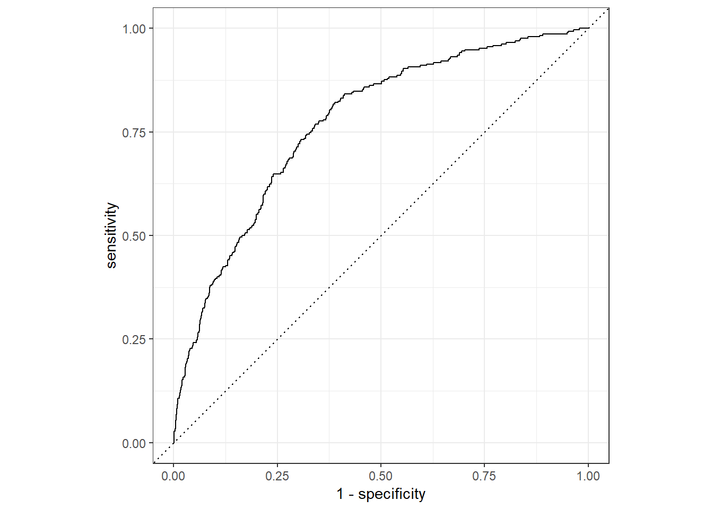

4 Introduction to machine learning
For many years, the field of statistics has proceeded along two different lines of development: one focused on inference and the other focused on prediction. Most readers of this particular document will have been trained in the inference tradition, in which the goal of a statistical analysis is to use sample information to make an inference about a broader population. However, in this chapter we will focus on the prediction tradition, in which our goal is to use limited sample information to build a model capable of making accurate out-of-sample predictions about new individuals we might come across.
4.1 Wait, aren’t those the same thing?
Often, yes, models that are good at making accurate inferences about some population parameter are also good at making predictions about new individuals from that population. The reverse is also often true: models that make accurate predictions are also probably models that can tell us something about the features of a broader population.
However, these two approaches also often imply some differences too. For example, in the inference traditional, interpretability and explainability are key. In that tradition, we are deeply skeptical of a model with a high \(R^2\) value, but which can’t be quickly explained to us. In contrast, in the prediction tradition, explainability still matters, but not nearly as much. If we can show that a model reliably produces good predictions, we are generally satisfied.
4.2 The tidymodels framework
If your goals are different, the tools you use to achieve those goals will generally be different too. Unlike in many other chapters, where everything is just a new flavor of the same old linear regression, in this chapter we introduce a whole new modelling framework, implemented in the tidymodels package.
This package was created out of a desire to unify (and thus simplify) the machine learning process in R, which is currently dominated by an array of diverse packages - many of which do the same thing, slightly differently. To help you get through your analysis quickly (and in a less error prone way) than sorting through a bunch of different packages, tidymodels will handle a lot under the hood, leaving you with a simple baking metaphor to guide you through the process.
4.3 Steps 1 & 2 - Load data and do some very basic cleaning
Again, we load the KSADS dataset with our custom function and do some very basic cleaning. We also load both the tidyverse and tidymodels packages because we’ll be using both throughout.
library(tidyverse)
library(tidymodels)
read_abcd_quietly <- function(file_path){
suppressMessages(
expr = read_delim(file_path, delim = '\t') %>%
filter(row_number() != 1) %>%
type_convert())
}
df <- read_abcd_quietly('data/abcd_lpksad01.txt') %>%
rename(grade_drop = kbi_p_c_drop_in_grades_l) %>%
filter(grade_drop %in% c(1, 2)) %>%
mutate(
grade_drop = factor(
x = grade_drop,
levels = c(1, 2),
labels = c('yes', 'no'))) %>%
group_by(subjectkey) %>%
filter(interview_age == min(interview_age))4.4 Step 3 - Split training and test samples
Recall from above that our goal with machine learning is to make good out-of-sample predictions. To test whether our model has done that, we need to split our sample into two parts: a training sample that we use to fit and calibrate our model (usually 80% of the total sample) and a smaller test sample we can use to evaluate how good that model is at predicting scores it has not seen before (usually 20%). We can do this with the initial_split() function.
df_split <- initial_split(df, prop = .80)
df_split## <Analysis/Assess/Total>
## <8282/2071/10353>As we can see, this splits our data into analysis (training) and assess (test) sub-components. If we want to look at a particular sub-component, we can simply ask for it with a simple helper function. In this case, we use the well-named training() function to get a look at which data ended up in the training set.
df_split %>%
training() %>%
head()## # A tibble: 6 x 90
## # Groups: subjectkey [6]
## collection_id abcd_lpksad01_id dataset_id subjectkey src_subject_id interview_age
## <dbl> <dbl> <dbl> <chr> <chr> <dbl>
## 1 2573 32435 47218 NDAR_INVBBH4~ NDAR_INVBBH4GW~ 141
## 2 2573 24853 47218 NDAR_INV27NU~ NDAR_INV27NU4C~ 138
## 3 2573 36895 47218 NDAR_INVFRT7~ NDAR_INVFRT7F0~ 123
## 4 2573 43694 47218 NDAR_INVN9D4~ NDAR_INVN9D4XZ~ 131
## 5 2573 33934 47218 NDAR_INVE4KD~ NDAR_INVE4KDYW~ 140
## 6 2573 48962 47218 NDAR_INVWY8V~ NDAR_INVWY8VJ5~ 154
## # ... with 84 more variables: interview_date <chr>, sex <chr>, eventname <chr>,
## # kbi_l_p_select_language___1 <dbl>, kbi_p_c_live_full_time_l <dbl>,
## # kbi_p_c_guard_l___1 <dbl>, kbi_p_c_guard_l___2 <dbl>, kbi_p_c_guard_l___3 <dbl>,
## # kbi_p_c_guard_l___4 <dbl>, kbi_p_c_guard_l___5 <dbl>, kbi_p_c_guard_l___6 <dbl>,
## # kbi_p_c_guard_l___7 <dbl>, kbi_p_c_guard_l___8 <dbl>, kbi_p_c_guard_l___9 <dbl>,
## # kbi_p_c_guard_l___10 <dbl>, kbi_p_c_guard_l___11 <dbl>,
## # kbi_p_c_guard_l___12 <dbl>, kbi_p_c_guard_l___0 <dbl>, kbi_p_conflict_l <dbl>, ...4.5 Step 4 - Build a data processing recipe
As mentioned above, the tidymodels framework is built around a cooking metaphor. The idea is that you start with a recipe, which is a set of instructions for what you want to do to process your data.
We do this by extracting our data, then telling R that we want a recipe() and feed it a formula indicating what we want to use as our outcome variable and what we want to use as our predictors. In this case, the formula grade_drop ~ . means “use grade_drop as the outcome and everything else you can find as a predictor.
After that, we use any number of step_...() functions. These are the steps in our recipe. There are dozens of helpful ones build into tidymodels, so make sure to browse the documentation for ones you might like.
In this case, we’ll use a few common ones:
step_rm()removes variables much likeselect()does. In this case, we remove variables that don’t have anything that would help with predicting grade drop (e.g., thesubjectkeyis a randomly generated variable and has nothing to do with grade changes).step_filter_missing()filters out variables that have too much missing data, based on a threshold we set. In this case, we want to get rid of ANY missing data.step_nzv()removes variables that have zero (or low) variance, indicating everyone has the same or similar scores and we wont get much information out of those variables.step_corr()removes variables that are highly correlated with one another because they offer little unique information.
Once all of this is done, we call prep() to finalize the recipe building process.
df_recipe <- df_split %>%
training() %>%
recipe(grade_drop ~ .) %>%
step_rm(ends_with('id') | matches('subjectkey')) %>%
step_filter_missing(all_predictors(), threshold = 0) %>%
step_nzv(all_predictors()) %>%
step_corr(all_numeric_predictors(), threshold = .50) %>%
prep()
df_recipe## Recipe
##
## Inputs:
##
## role #variables
## outcome 1
## predictor 89
##
## Training data contained 8282 data points and 8282 incomplete rows.
##
## Operations:
##
## Variables removed collection_id, abcd_lpksad01_id, dataset_id, src_subject_id, s... [trained]
## Missing value column filter removed kbi_p_c_best_friend_len_l, kbi_p_c_reg_friend_gr... [trained]
## Sparse, unbalanced variable filter removed kbi_p_c_guard_l___1, kbi_p_c_guard_l___2, kbi_... [trained]
## Correlation filter on kbi_p_conflict_causes_l___8, kbi_p_c_spec_serv_l... [trained]The output we get is helpful here, indicating how many variables are involved in our recipe.
4.6 Step 5 - Extract the preprocessed data
With our preprocessing recipe prepped, we can now bake() it. This means we implement the preprocessing instructions on the datasets.
To do this, we say we want to take the recipe, and then bake it using our dataset of choice.
We’ll do this once for our training data and once for our testing data. Note, for our testing data we also filter to have only complete cases on our outcome variable as well, which will make evaluation easier later.
df_training <- df_recipe %>%
bake(training(df_split))
df_testing <- df_recipe %>%
bake(testing(df_split)) %>%
filter(complete.cases(.))4.7 Step 6 - Fit a model
With our data prepped and baked, it is time to finally fit a model. In this case, we’ll fit a random forest model, using the rand_forest() function.
Underneath the hood, rand_forest() is capable of using a bunch of different “engines” (R packages) to do its computations, each with their own quirks. You won’t notice them because rand_forest() will make everything run smoothly for you. However, you do need to tell it which engine to use with set_engine(). In this case, we’ll tell it to use the basic 'ranger' engine because that is a popular package.
Lastly, with all the options set, we tell R to fit() our model, using the familiar formula / data combination of arguments, much like linear regression. The only trick here is again the use of the . in our formula, which means “use everything you can find”
df_ranger <- rand_forest(trees = 100, mode = 'classification') %>%
set_engine('ranger') %>%
fit(grade_drop ~ ., data = df_training)
df_ranger## parsnip model object
##
## Ranger result
##
## Call:
## ranger::ranger(x = maybe_data_frame(x), y = y, num.trees = ~100, num.threads = 1, verbose = FALSE, seed = sample.int(10^5, 1), probability = TRUE)
##
## Type: Probability estimation
## Number of trees: 100
## Sample size: 8282
## Number of independent variables: 19
## Mtry: 4
## Target node size: 10
## Variable importance mode: none
## Splitrule: gini
## OOB prediction error (Brier s.): 0.09693659Great! Our output gives us some information about our model. But… it didn’t give use a ton of information about how good that model is.
4.8 Step 7 - Evaluate the model
To get information about how well our model did predicting new data, we need to use it to make predictions about our test data, then see how close those predictions were to the actually observed data in that test set that we set aside.
To do that, we take our model, then call predict() on our testing data. After that, we use bind_cols() to take those predictions and place them in a new dataframe, right next to the observed testing data. With all of that done, we can then use the metrics() function to get some performance metrics. All we need to do is tell metrics() which column represents the true score and which one is the prediction estimated by the model.
df_ranger %>%
predict(df_testing) %>%
bind_cols(df_testing) %>%
metrics(truth = grade_drop, estimate = .pred_class)## # A tibble: 2 x 3
## .metric .estimator .estimate
## <chr> <chr> <dbl>
## 1 accuracy binary 0.860
## 2 kap binary 0.0700Here, we can see that our model is about 88% accurate at predicting a grade drop for a student it has never seen before.
4.9 Step 8 - Plot your data
It is also possible to plot the success of your model, using a similar pipeline. But this time instead of using metrics(), we ask R to give us a roc_curve() and to graph it with autoplot(). This gives us a publication-ready figure, in just two extra lines!
df_ranger %>%
predict(df_testing, type = 'prob') %>%
bind_cols(df_testing) %>%
roc_curve(truth = grade_drop, estimate = .pred_yes) %>%
autoplot()